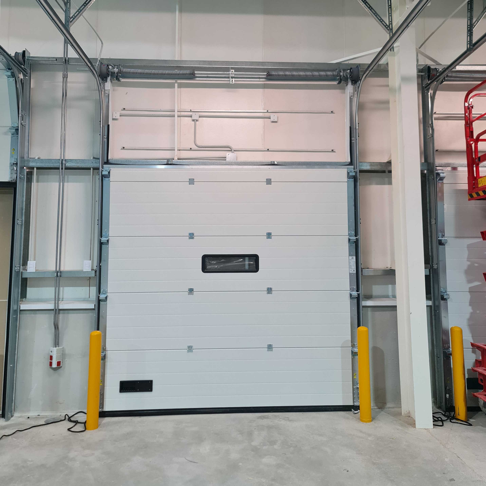
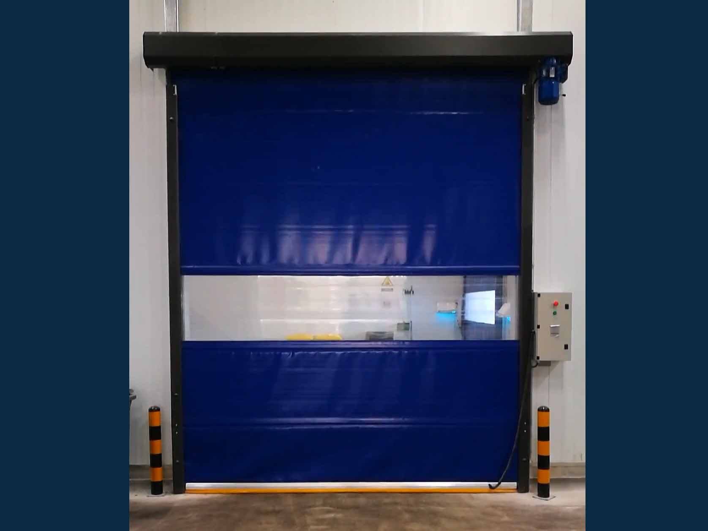
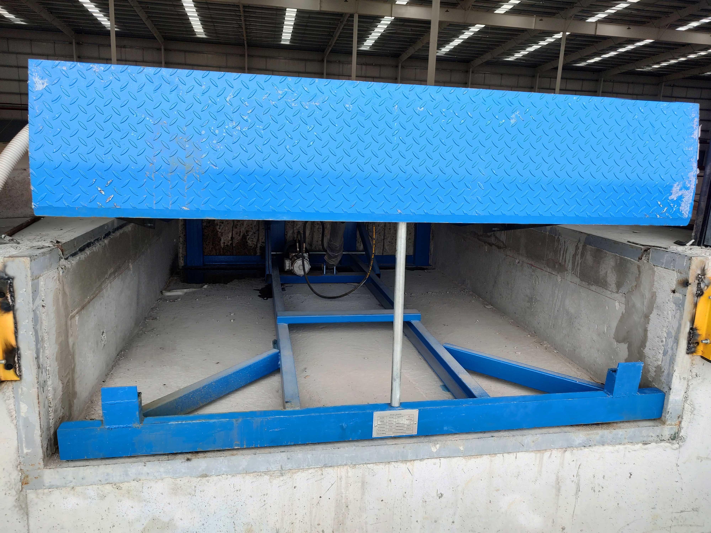
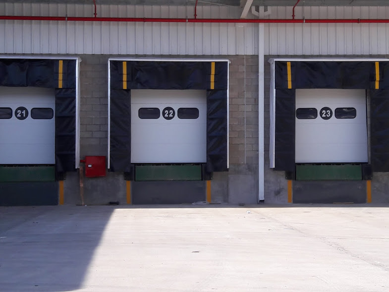
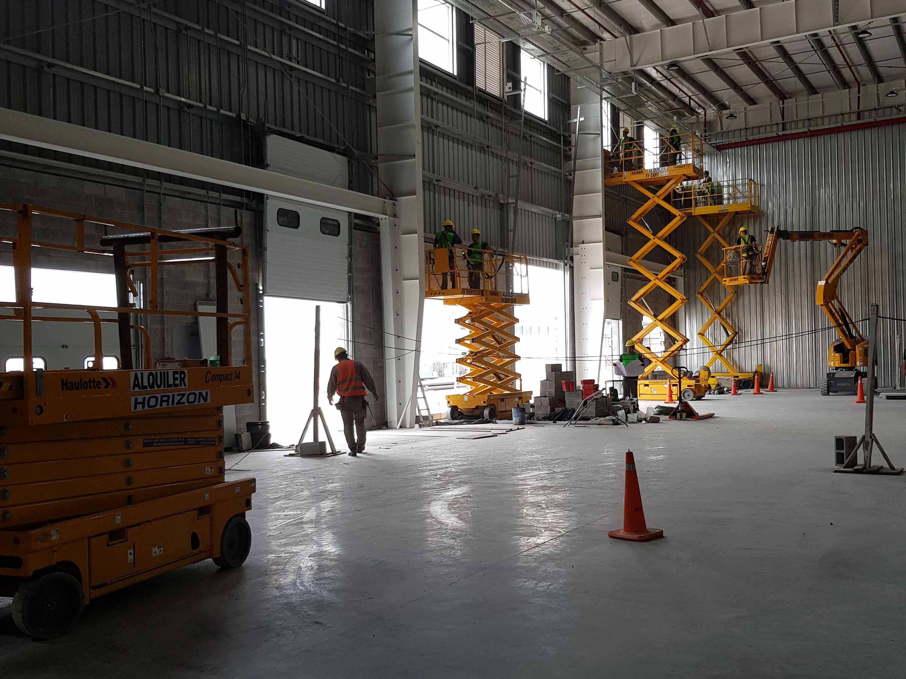

Venta, instalación, mantenimiento y servicio técnico multimarca para accesos industriales. Más de 15 años de experiencia respaldan nuestro trabajo.
Realizamos la instalación completa de sistemas de acceso para logística y operación industrial. Trabajamos con puertas seccionales, rápidas y enrollables, rampas niveladoras y abrigos de muelle. Nos ocupamos del montaje, puesta en marcha y ajustes necesarios para garantizar un funcionamiento seguro y eficiente desde el primer día. También asesoramos en la elección del equipo según el tipo de operación y flujo de trabajo.
Ofrecemos planes de mantenimiento programado para evitar fallas, reducir paradas y prolongar la vida útil de los equipos. Incluye revisión general, ajustes, lubricación, control de componentes eléctricos y mecánicos, y detección anticipada de desgastes. Trabajamos con equipos multimarca y adaptamos la frecuencia según el uso y criticidad de la operación.
Brindamos servicio técnico para resolver fallas imprevistas que afectan la operación. Diagnosticamos rápidamente el problema y realizamos la reparación con repuestos adecuados y soluciones duraderas. Atendemos puertas industriales, rampas niveladoras y abrigos de muelle, priorizando restablecer el funcionamiento en el menor tiempo posible.




En ICTUS, entendemos que el tiempo es un recurso crítico en la industria. Por eso, nos enfocamos en brindar soluciones técnicas rápidas, eficientes y definitivas.
Contamos con un equipo altamente capacitado para resolver cualquier desafío en accesos industriales, garantizando la operatividad de sus instalaciones con servicio en todo el país.

Estamos listos para asesorarlo y brindarle la mejor solución técnica para su empresa.
Pilar, Buenos Aires (Cobertura Nacional)